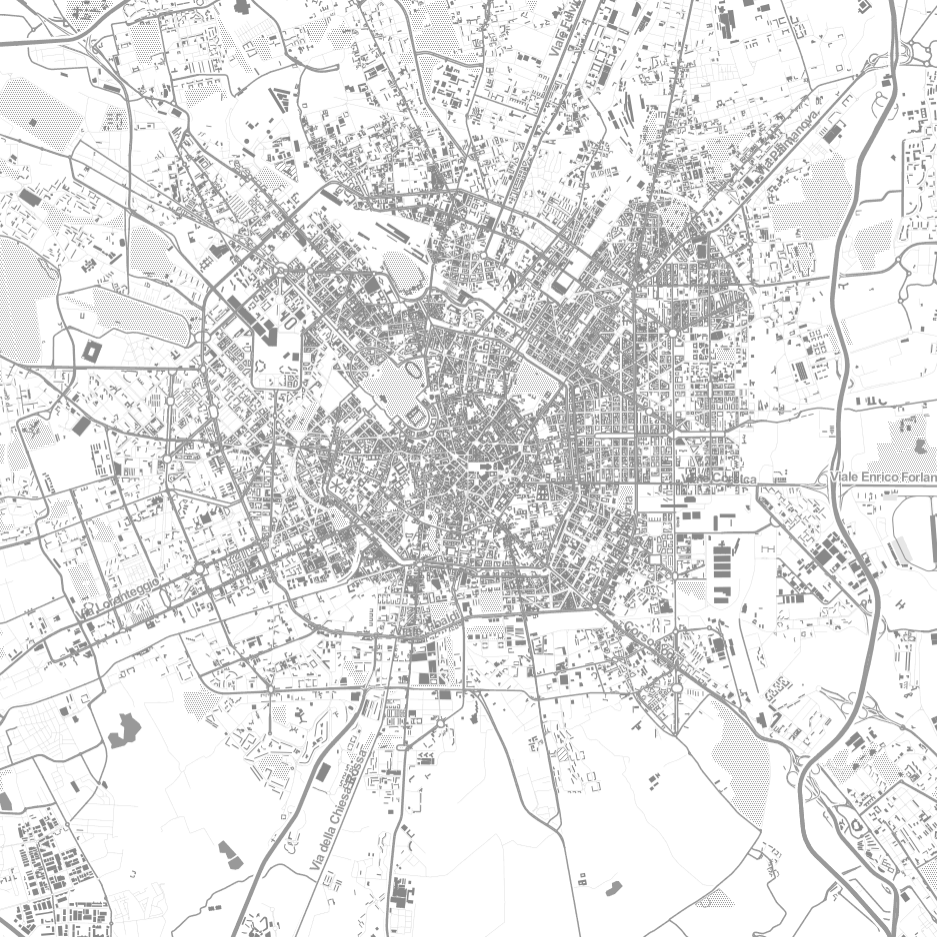

Network Meta Analysis, also called Mixed treatment comparison or Multiple treatments meta-analysis, is a clinical analysis that syntheses information over a network of drug to drug (or drug to placebo) comparisons to assess the comparative effects of more than two alternative interventions for the same condition.
The above figures represent a loop of three node on a network of treatments. Corners and sides on the triangle represent treatments (A,B,C) and trials (A vs B, B vs C and A vs C) respectively. Dark areas show the ratio of success for that treatment on the trial conditions. On the figure at the bottom ratios are not normalized.
A network meta-analysis synthesizes direct and indirect evidence over the entire network, so that estimates of intervention effect are based on all available evidence for that comparisons. This evidence may be direct evidence, indirect evidence or mixed evidence.
Case of Study
Uncertainty on Voter Elections
Project developed on the occasion of the Piemonte Visual Contest, it is a case example of use of Open Data for analysis of social interest.
The voter turnout, i.e. the percentage of eligible voters who cast a ballot in an election, has been related with the population density of the 1206 municipalities of the italian region Piedmont.
Municipalities with higher population size have an higher uncertainty on electoral preferences.
The spots on the scatter plot above represent the 1206 municipalities, the x and y coordinates refer respectively to the logarithm of the population density (people/km^2) and to the voter turnout during the italian 2013 general election of the Chamber of Deputies.
Legend is interactive, explore data clicking on it. Moreover, click on the circles to discover further information on single municipalities.
The uncertainty is calculated by means of the Shannon entropy on
the number of votes assigned to every delegate.
For example, given the municipality \(x\) let's suppose that the three delegates \(a\),
\(b\) and \(c\) obtained \(v_a^x\), \(v_b^x\) and \(v_c^x\) votes, and define \(v^x\) as the sum of them.
Then the uncertainty \(\mathcal{H}(x)\) is calculated as the Shannon entropy
$$
\mathcal{H}(x) = -\sum_{p\in(a,b,c)} \frac{v_p^x}{v^x}\ln\frac{v_p^x}{v^x}
$$
The straight line shows a linear regression analysis on the set of points, the 95% confidence intervals on the y-intercept and slope are drawn on demand. Read more...
Case of Study
HIV/AIDS Medical Diagnosis
Project financed by the SSepi-SeREMI epidemiology service on monitoring and prevention of infectious deseases, in collaboration with the Zadig editorial company.
Thanks to the introduction of new antiretroviral treatments, HIV circulation registers a small decrease on the number of new HIV diagnosis and a constant reduction on new AIDS diagnosis. Nevertheless, the number of people living with HIV/AIDS is still increasing.
The figure is a case example of a highly customized dashboard, the visualization has been created from scratch according to the customer needs. On the example a couple of dataset with different scales on the y-axis are shown one above the other in order to highlight emerging patterns on the time series.
SSepi-SeREMI is part the italian healthcare network and represents a reference for information exchange between epidemiological survey services and the population. Moreover it provides
consulting and education activities in order to organize local prevention strategies and to realize quantitative epidemiological studies.
Case of Study
Telecom Call Detail Records
Analysis performed on the occasion of the Telecom Big Data Challenge. A sample of 53 millions of strings of data have been analyzed by means of a normalization mechanism targeted to find space-time patterns on the user behaviour throughout the working-day in the city of Milan.
The following is a mathematical analysis of about 53,280,000 Telecom CDRs records collected on the Milan grid during November and December 2013. The main goal is the creation of a data model that can provide richer information on basic trends on customer usage, by means of a cost-effective mechanism that normalize the data according to relevant space and time dependences of the service consumption.

The figure represents the average dynamics of user activity during a typical working day in the city of Milan. Grid sectors are highlighted when the users activity belongs to a certain range of values, changing the range the resulting dynamics will change.
Let \(c(i,t)\) the CDRs data associated to cell \(i\) at time \(t\). Then we define \(C(i,t)\) as the mean of the \(c(i,t)\) values calculated over the 37 working days considered. In other words
$$
C(i,t) = \frac{1}{n+1}\sum_r c(i,r)
$$
where \(r = t, t + 144, t + 2 \times 144, ... , t + n \times 144\) and \(n+1\) are the number of working days taken into account (144 are the number of 10 minutes intervals in a day).
The observables \(C(i,t)\) describe the average dynamics of user activity during a typical working day and they depends mostly on spatial factors (as the population density) and on temporal factors (awakening and lunchtime for example). Then we formulate a simplified model with a spatial factor constant on time and a temporal factor constant over space, in formula we write \(C(i,t)\) as
$$
C(i,t) = A(t) D(i)
$$
where \(A(t)\) and \(D(i)\) are the temporal and spatial factors aforementioned. Note that \(A(t)\) does not depend on the spatial variable \(i\) and \(D(i)\) does not depend on the temporal variable \(t\). Continue to read...
A deep understanding of the role played by genetic mutation patterns in the
variant-specificity of humoral protective response is of primary importance on
the development of vaccines against the most widespread viral pathogens, like
Influenza, HIV and HCV.
The discovery of a relation between genetic dynamics and antigenic
evolution is the main goal of the project and it is pursued by means of a
comparison between
empirical results on antigenic classification and a new theoretical distance
between genome sequences.
The proposed distance is based on an informational metrics
sensitive to the global dispositions and correlations of the amino acids along the
chain, it is therefore expected to take into account the modularity of the
information stored on the sequences, which is a key feature of biological evolution.
The figure shows the temporal evolution of influenza virus H1N1 in the last years.
Viruses belonging to the same family are positioned at the same y position, in other words, a virus family is identifying by an horizontal sequence of segments (each segment
identifies the hemagglutinin of an isolate, isolates are full lenght
and come from all over the world). Note that virus strains do not appear suddenly,
early signals are present even one year before in some cases.
More precisely, the proposed metric was originally introduced by Rohlin for
partitions in abstract probabilities space.
It is founded on the mutual conditional Shannon
entropy among two partitions and it summarizes the information required to
distinguish them.
If two partitions are given, \(\alpha\) and \(\beta\), their product \(\alpha\beta\)
is defined as the minimal partition refining both atoms of \(\alpha\) and
\(\beta\).
The Rohlin distance among two partitions is
$$
d_R(\alpha,\beta) = H(\alpha\beta) - H(\alpha) - H(\beta).
$$
\(d_R(\alpha,\beta)\) is a measure of the overall non-similarity between
\(\alpha\) and \(\beta\), therefore it is supposed to capture the information
dissimilarities carried by evolution.